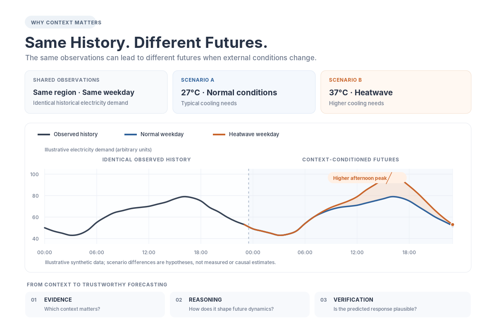

Context-Aware Time Series Forecasting with LLMs: From Pattern Recognition to Cognitive Reasoning
10:10–12:10 · UTC+8Grand Ballroom 1 · Wanda Vista Shenyang
News
Thank you for joining our tutorial at ICDM 2026!
Overview
This tutorial explores advances in context-aware time series forecasting with large language models, moving beyond historical pattern recognition toward context-grounded cognitive reasoning. Real-world forecasts depend on temporal patterns, external conditions, events, domain knowledge, and system states. Using context as predictive evidence starts with evaluating what additional features tell us. What evidence matters, what evidence can we trust, and how can we verify its influence on the future? The tutorial approaches this question through multimodal semantic understanding, slow-thinking reasoning over evidence, and agentic interaction with tools and environments. It discusses applications in electricity load, renewable power, traffic, industry, and scientific forecasting, and highlights open challenges and future directions.
Same History, Different Futures

Read the case as text
Consider tomorrow’s electricity demand in one region. Both scenarios start from identical historical observations and assume the same weekday conditions. Under normal weather, electricity demand may follow a familiar daily pattern. During a heatwave, increased cooling demand can raise and prolong the afternoon peak.
Scenario A — Normal Weekday
27°C maximum temperature
Normal cooling demand and a familiar daily load pattern.
Scenario B — Heatwave Weekday
37°C maximum temperature
Increased cooling demand and a higher, potentially longer afternoon peak.
Illustrative forecasts based on synthetic data.
Three Key Questions
The forecasting challenge is to identify relevant evidence, explain how it changes the load curve, and verify that the predicted response is reasonable.
- Evidence — What matters?
- Which external information is relevant and trustworthy for forecasting?
- Reasoning — Why and how?
- How does contextual evidence influence the direction, magnitude, and timing of future changes?
- Verification — Can we trust it?
- Does the predicted response agree with the available evidence and known system constraints?
Tutorial Outline
Tutorial Organizers
Slides
References
- Mingyue Cheng, Zhiding Liu, Xiaoyu Tao, Qi Liu, Jintao Zhang, Tingyue Pan, Shilong Zhang, Panjing He, Xiaohan Zhang, Daoyu Wang, Jiahao Wang, Enhong Chen, “A Comprehensive Survey of Time Series Forecasting: Concepts, Challenges, and Future Directions.”
- Xiaoyu Tao, Mingyue Cheng, Ze Guo, Bokai Pan, Qi Liu, Shijin Wang, Enhong Chen, “CastClaw: A Human-in-the-Loop Autonomous Agent for Industry Time Series Forecasting.”
- Bokai Pan, Ruijie Yang, Mingyue Cheng, Jiahao Wang, Xiaoyu Tao, “CastWorld: Benchmarking Context-Aware Agentic Time Series Forecasting Beyond Predictive Accuracy.”
- Mingyue Cheng, Xiaoyu Tao, Qi Liu, Ze Guo, Enhong Chen, “Position: Beyond Model-Centric Prediction — Agentic Time Series Forecasting.”